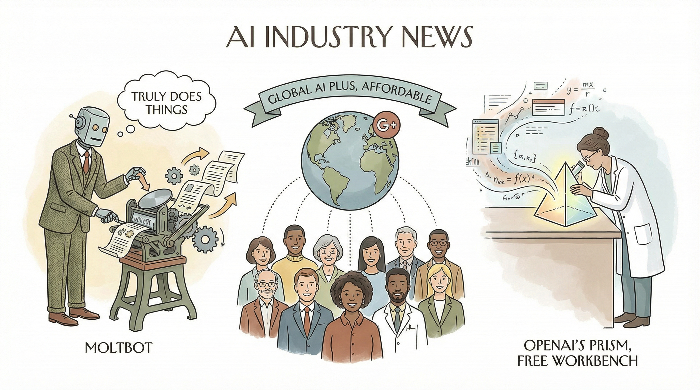

开源AI代理Moltbot走红，用于管理提醒、记录健康数据和客户沟通。
两克伴AIGC日报
2026-01-28 星期三

本期关注：开源AI代理Moltbot走红，Airtable推出Superagent入局；Google AI Plus全球扩展提供Gemini 3 Pro，OpenAI上线科学家免费工作台Prism，Anthropic融资超百亿美元估值3.5万亿美元，AI代理与巨头服务布局加速。
📰 行业动态
Google AI Plus计划全球推出，包括美国，提供Gemini 3 Pro等AI工具。
OpenAI推出面向科学家的免费AI原生工作台Prism，支持无限项目和协作者。
Anthropic最新一轮融资超百亿美元，估值达3.5万亿美元。
Google AI Plus在35个新国家和地区推出，包括美国。
🔥 今日焦点
Airtable近日宣布推出其首款独立产品——SuperAgent，标志着该公司在13年发展历程中迈出了重要一步。SuperAgent的问世不仅彰显了Airtable在人工智能领域的雄心壮志，也反映了当前AI时代的现实：所有严肃的软件玩家都在竞相证明自己能够交付智能代理。
SuperAgent作为Airtable的AI代理产品，旨在为用户提供高效、智能的数据处理和自动化服务。它的推出，意味着Airtable正式加入了AI代理的竞争行列，与Salesforce、IBM等企业展开角逐。这一举措对于AI领域具有重要意义，一方面，它推动了AI代理技术的进一步发展；另一方面，也加速了AI技术在企业级应用中的普及。
谷歌近日宣布将Google AI Plus订阅服务扩展至包括美国在内的35个新市场。该服务在美国的月费为7.99美元，订阅用户可在Gemini应用中体验Gemini 3 Pro和Nano Banana Pro，同时Flow将新增AI影视制作工具，NotebookLM则提供研究和写作辅助。此外，用户最多可与五名家庭成员共享服务。
此次扩展标志着谷歌在AI领域的进一步布局，对AI领域具有重要意义。一方面，Google AI Plus的推出有助于推动AI技术的普及和应用，为更多用户提供便捷的AI服务；另一方面，谷歌通过提供多样化的AI工具，助力用户在影视制作、研究写作等领域实现创新。
近日，开源AI模型Kimi-K2.5在多个基准测试中击败了Claude Opus 4.5，其中包括编码能力。这一突破性进展引起了广泛关注。Kimi-K2.5是由中国研究团队开发的开源预训练语言模型，其性能的提升得益于团队在模型架构和训练方法上的创新。这一成果不仅展示了开源AI模型的潜力，也为AI领域的发展带来了新的启示。
Kimi-K2.5在多个基准测试中击败Claude Opus 4.5，表明开源AI模型在性能上已经可以与商业模型相媲美。这一突破对于AI领域具有重要意义。首先，它证明了开源模型在技术上的可行性，为AI研究者提供了更多选择。其次，开源模型的性能提升有助于推动AI技术的普及和应用，降低AI研发门槛。最后，这一成果有助于促进全球AI领域的合作与交流，推动AI技术的健康发展。
📚 深度长文
Kimi K2.5：视觉自主智能，是继Kimi K2和Kimi K2 Thinking之后的又一力作。Kimi K2.5在Kimi K2的基础上，经过约15T混合视觉和文本的预训练，成为一款原生多模态模型。它不仅具备业界领先的编码和视觉能力，还引入了“自主智能群”范式，显著提升了长序列工具调用和任务分解效率。
文章指出，Kimi K2.5的核心优势在于其多模态处理能力。通过融合视觉和文本信息，K2.5能够更全面地理解和处理复杂任务。此外，自主智能群范式使得K2.5能够将任务分解为多个子任务，并分配给多个智能体同时执行，从而大幅提升处理效率。
OpenAI近日发布了其内部团队OpenAI for Science的最新成果——一款名为Prism的免费工具。该工具将ChatGPT嵌入文本编辑器中，旨在为科学家们提供撰写科学论文的便捷。Prism的核心观点是将ChatGPT这一强大的AI工具与科学家的日常工作紧密结合，以提高科研效率。文章通过深入剖析Prism的功能和设计理念，展示了OpenAI在推动科学研究和AI技术融合方面的独特见解。阅读本文，AI从业者可以了解到OpenAI如何将前沿技术应用于实际场景，以及这一创新工具如何助力科学家们提升科研效率。
---
本文探讨了使用AI代理从零开始构建浏览器的可能性。作者embedding-shapes对Cursor的FastRender浏览器项目所引发的炒作感到愤怒，从而激发了他们使用编码代理构建浏览器的灵感。他们成功地将一个Codex CLI代理驱动，在三天内构建了20,000行Rust代码，成功渲染HTML+CSS，且无需任何Rust crate依赖。尽管使用了Windows、macOS和Linux系统框架进行图像和文本渲染，但这一成果令人印象深刻。文章深入探讨了AI在浏览器构建中的应用，为AI从业者提供了独特的见解和思考。
🛠️ 产品推荐
Git-Watchtower是一款基于终端的用户界面工具，旨在帮助用户高效管理多个Claude Code在线分支。该产品通过实时监控远程仓库，当任何分支有新提交时，用户会收到视觉和可选的音频通知。Git-Watchtower有效解决了在GitHub和终端之间频繁切换标签页以跟踪更新变化的问题，大幅提升了代码协作的效率。对于需要同时处理多个分支的技术从业者来说，Git-Watchtower是一款不可或缺的辅助工具。
---
Show HN: ML-Ralph是一款针对机器学习实验的自主代理循环工具。它能够自动执行实验，包括形成假设、训练模型、评估结果和迭代证据。ML-Ralph集成了W&B，支持长时间运行的任务，并提供完整的审计跟踪。在Kaggle Higgs Boson竞赛中，ML-Ralph仅用数小时便进入前30名。该产品处于早期阶段，仍有大量改进空间，欢迎反馈。ML-Ralph通过其AI能力和创新点，为机器学习研究者提供高效、便捷的实验平台，有效解决实验流程中的繁琐问题。
---
MikeBrain是一款专为AI代理构建的治理框架，旨在为AI系统提供全面的管理与控制。该框架通过提供一系列工具和机制，确保AI代理在执行任务时遵守预设的规则和标准。MikeBrain的核心功能包括权限管理、数据监控、风险评估等，帮助用户解决AI应用中的治理难题。其AI能力和创新点在于，通过智能算法优化治理流程，提高AI代理的执行效率和安全性。对于技术从业者而言，MikeBrain是提升AI应用治理水平的理想选择。